开始
TapeDesk 是一台四到六轨的磁带录音机，带一个声音引擎，用在 iPhone 和 iPad 上。第一次用的话，从这里开始。
需要什么
你需要一台装有 iOS 17 或更高版本的 iPhone 或 iPad。App 在 iPhone 上竖屏使用，在 iPad 上横竖都可以。可以用设备自带的麦克风录音，也可以用 USB 音频接口录音。不需要账号，也不用注册。
第一次打开 App 时会载入一盘示例磁带 demo，里面有四条以 120 BPM 录好的音轨。它和其他磁带一样，可以修改，也可以删除。
App 会申请三个权限：麦克风用来录音，本地网络用来通过 Link 找到其他 App，Bluetooth 用来配对 MIDI 控制器。App 不收集任何数据。
两种模式
在 设置 ▸ 应用 ▸ 模式 里选 录音机 或 groovebox。录音机 有磁带和混音。groovebox 还多了合成器和 音轨 页面，可以在那里边弹边录。切换模式不会动你的磁带。
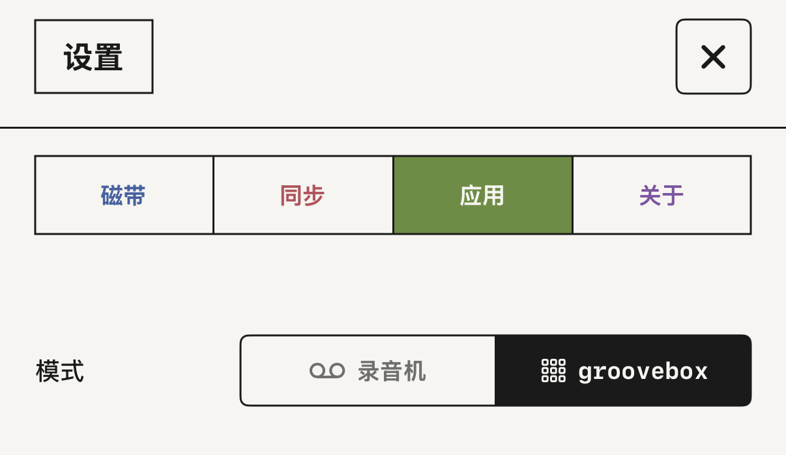
模式 一行。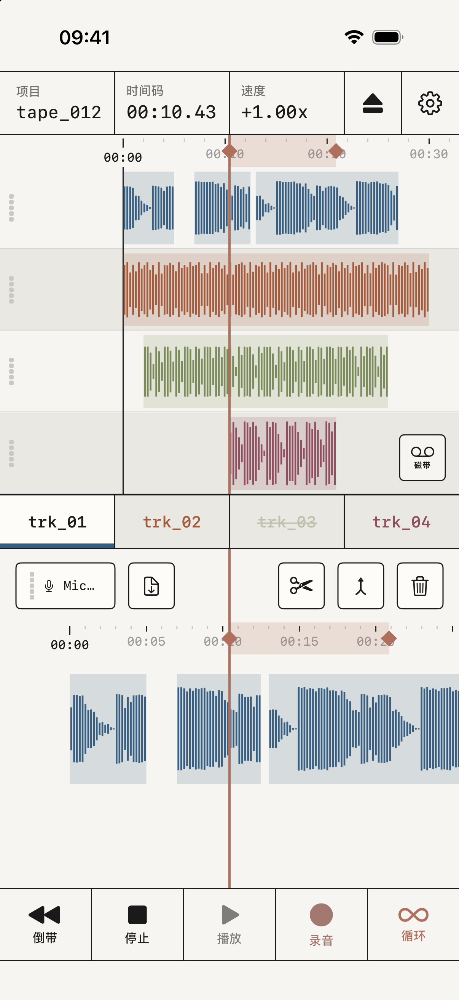
录音机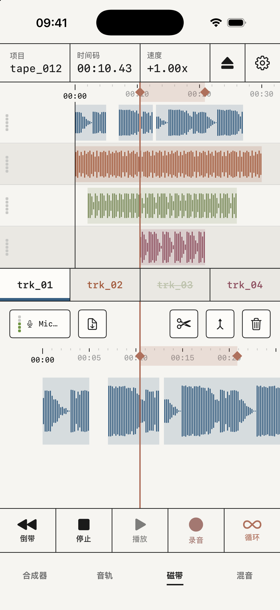
groovebox屏幕
磁带页面从上到下依次是顶栏、整盘磁带、放大显示的待录音轨和走带控制。
在顶栏里，项目 打开你的磁带，弹出图标打开导出，齿轮打开设置。
最下面一行通往四个页面：合成器 · 音轨 · 磁带 · 混音。
没有页面那一行。用角落里的切换键在磁带和混音之间来回，节拍器就在它上面。
项目、时间码 和 速度。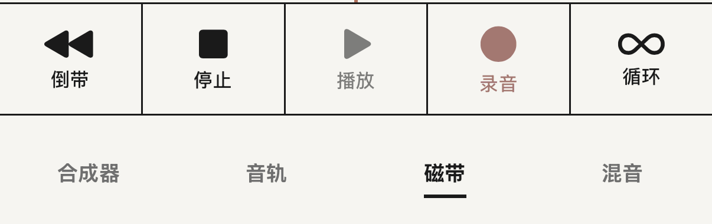
第一段录音
- 点一条音轨的标签，让它进入待录状态。
- 按
录音。如果磁带是停着的，会先响一段预备拍。 - 录完按
停止。 - 按
倒带回到开头，再按播放听一遍。
这样你就有了第一段录音。其他功能等用到的时候再慢慢看。
录音
让录音自己开始
按住 录音，会出现一个门限推子，范围是 −60 到 0 dB。输入越过门限时录音自动开始，一个人录、手机又够不着的时候很方便。
录音，拍一下手，录音自己开始。音轨
一盘磁带有四到六条音轨。iPhone 上默认四条，iPad 上默认六条，可以在 设置 ▸ 磁带 的 音轨 里修改。每条音轨最多 128 个区域，一盘磁带长 10 分钟。
如果减少音轨会去掉一条录过音的音轨，要点两下同一个数字来确认。之后 音轨 下面会出现 撤销，能把整条音轨找回来。
现场循环
循环打开时，录音 会录在正在播放的声音上面，不会把它抹掉，每一圈叠一层。按 停止 后，所有层合成一个循环。
门限在这里也能用。按住 录音，把推子放到你想要的位置，新的一层会从第一下起音开始。越过门限之前刚弹的那一点也会保留。
打开 音源 时，每一圈都会录下网格里的所有音轨。详见 同时录多路输入。
同时录多路输入
录一遍时，每条音轨可以各录自己的音源。音源可以是合成器、手机的麦克风，或者 USB 音频接口的任意一个通道，所以即使没有接口也有两个：一条音轨录合成器，另一条录你的声音。
点输入按钮打开监听面板，在 音源 一行里按最后一个键 音源，会打开 音源 → 音轨 网格。先点一条音轨，再点它要录的音源。按 录音 时，所有设了音源的音轨同时录，按 停止 后每条各自留下一个区域。循环和门限也是这样。
- 接口的一个通道可以送到多条音轨，一条音轨也可以接收多个通道。
- 合成器只能在一条音轨上。放到另一条，它就会换过去。
- 一条音轨录合成器或者输入，不能两个一起录。
- 在已经待录的标签上再点一下，这条音轨就变成
safe。它仍然显示自己的音源，但下一遍不会录。 - 接口的通道以原始增益进入，所以电平要在接口上调。
- 要同时录合成器和人声，请用有线耳机监听。详见 声音从哪里进来。
网格随磁带保存，下次打开磁带时，只要接的是同一个输入，它就会恢复。想重新只录一个音源，在同一行里点 合成器 或 输入。
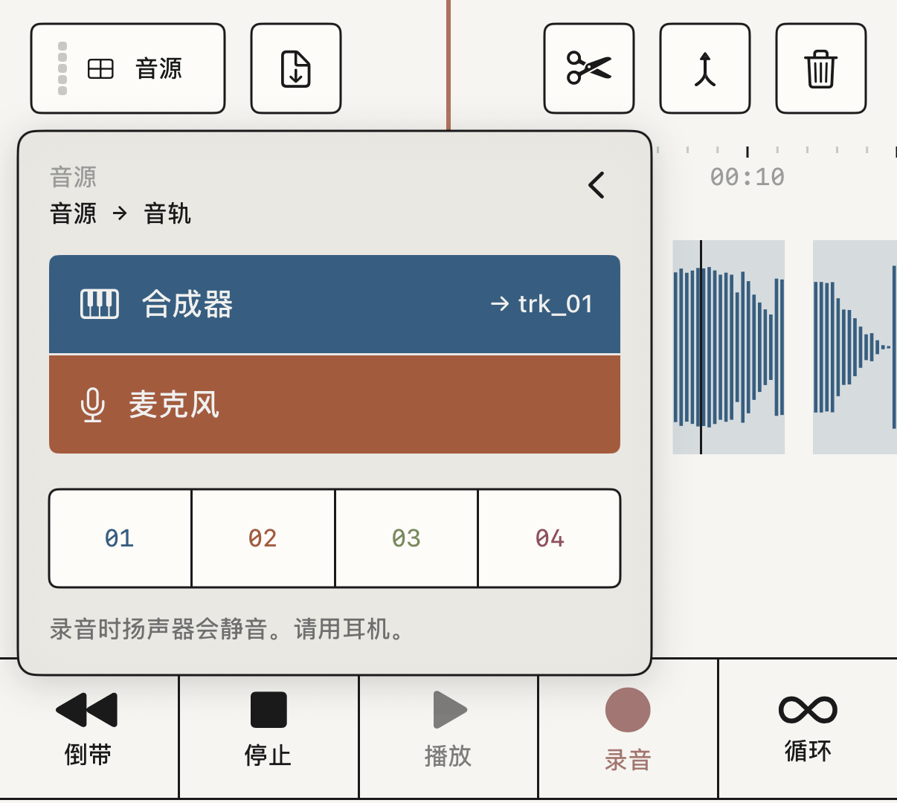
trk_01，麦克风在 trk_02。声音从哪里进来
输入由 iOS 决定：接上接口之前用设备的麦克风，接上之后用接口。
通过 Bluetooth 听到的声音会晚大约 200 ms，跟着它录的内容没法对齐。录音时请用有线耳机监听。
如果用手机麦克风录音、用扬声器听，录音期间输出会静音，免得麦克风把正在放的声音录进去。戴耳机时什么都听得到。
如果 App 在录到一半时被关掉，下次打开时会问你要不要恢复这段录音。来电或 Siri 会停下引擎，录音保存到那一刻为止。
速度和循环
速度
点顶栏的 速度，会打开一个竖向推子，1.00x 在中间，2.00x 在上面，0.25x 在下面。音高随速度升降，和卡座一样。
推子下面的锁决定松手后会怎样。锁打开时，速度回到 1x。锁上时，速度停在你放下的位置，并随磁带保存。
用别的速度录的录音，播放时仍保持那个速度。
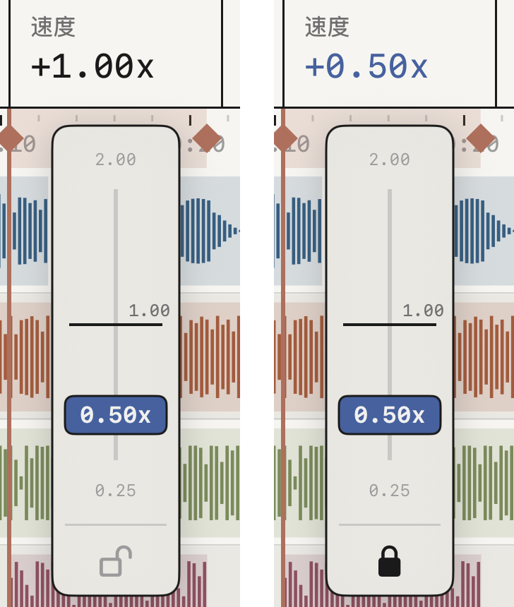
在磁带上移动
倒带 回到开头。按住 播放 时，倒带 变成快进。
拖动待录音轨可以移动磁头。磁带停着时，磁头像搓黑胶一样跟着手指走。磁带在放时，拖动的速度会改变音高。
拖动时，标尺上的每个刻度会轻轻震一下，带编号的小节、待录音轨上区域的边缘和循环的两端会震得更明显。
循环
拖动标尺上的把手，标出循环的起点和终点，最长可以是整盘磁带。接缝处有一个很短的淡变。
选中一个区域时，编辑栏里的 循环 会把循环设成这个区域。
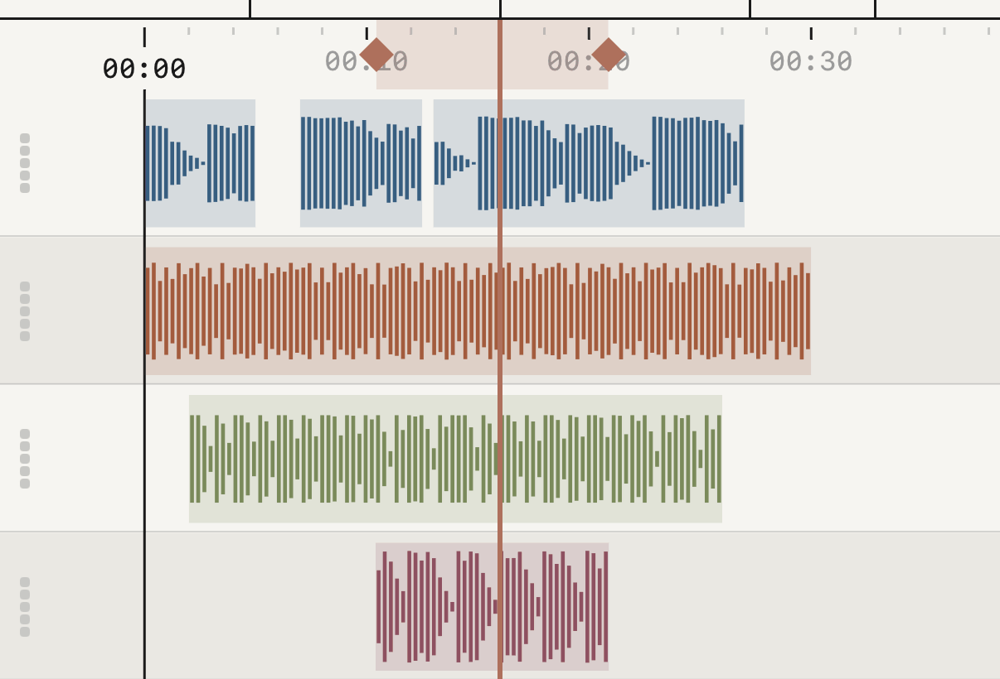
编辑
每段录好的声音是一个区域。
音轨工具
音轨标签下面一行有四个工具。
- 输入按钮打开监听面板。
- 文档图标把音频文件导入到音轨。
- 剪刀在磁头位置把区域剪开。
- 垃圾桶清空待录音轨，
撤销可以找回来。
两条音轨并成一条
并轨 把两条音轨合成一条，空出一条音轨。用出厂设置 印录 时，源音轨的推子、声像和两路发送都会写进音频里，这些控件随后回到中性位置，免得作用两次。
合成器 groovebox
合成器有十一个合成引擎、一个采样器和一套鼓组，用 琴键、和弦 或 音序 来弹。
选一个声音
点最上面显示引擎和预设的那一格，会打开浏览器，左边是引擎，右边是它们的预设。上面有三个类别 合成器 · 采样器 · AU，还有星标的 按音色，它按乐器把声音分组，也存放你的收藏和文件夹。
点一个预设，它立刻载入，浏览器保持打开。双击则载入并关闭。如果会丢掉没保存的采样声音，它会先问你。
保存 把当前的声音存成一个新预设。按住你自己的预设可以 重命名、剪切 或 删除。星标把它设为收藏。名字旁边的圆点表示你改过声音但还没保存。
每条音轨的声音
如果你不记得一条音轨是用哪个预设录的，磁带记得。每次把合成器录到一条音轨上，磁带都会存下当时的声音。
它在 按音色 里一个以磁带命名的文件夹中，每条音轨一行。在那条音轨上重新录，它就会被替换。
这些声音属于这盘磁带：别的磁带里看不到，删除磁带时也一起删掉。想留下一个，就载入它，再用 保存 存成预设。
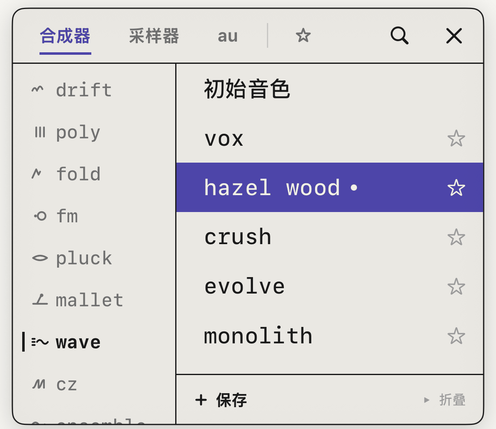
塑造声音
声音名称下面有五个标签页，每页两排旋钮。
合成器上排是引擎的四个宏旋钮，下排是声部（复音·单音·连奏）、滑音和电平。包络画出两条包络，一条管音量，一条管滤波器。滤波把截止频率和共振放在同一条曲线上，还有滤波器类型和包络对它的作用量。调制有两个 LFO。点目标，再点你想让它动的旋钮。按住目标可以取消。效果是引擎自己的效果，和混音里的效果分开。
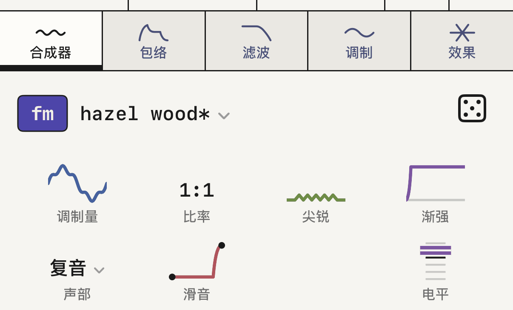
合成器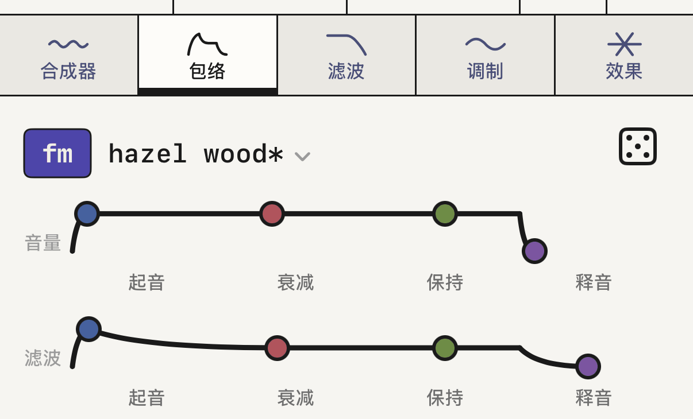
包络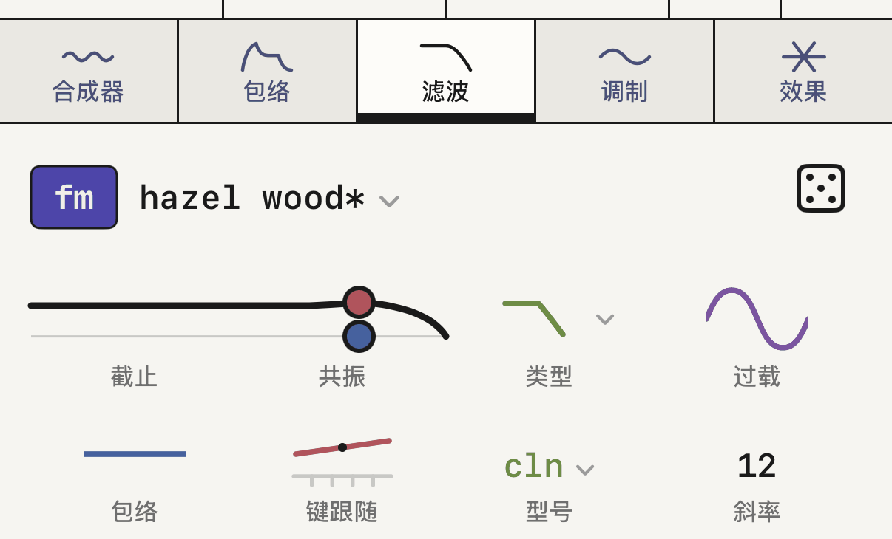
滤波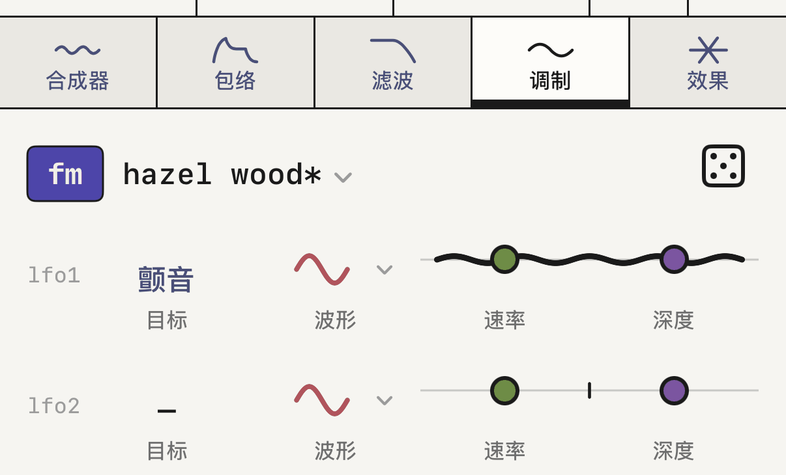
调制琴键
键盘只弹当前音阶里的音，音阶用它正上方的 根音 和 音阶 来选。出厂有 14 种音阶，也可以在音阶菜单里建自己的。− 和 + 切换八度。
一个音弹得多响，取决于手指按得多重和手机感受到的敲击，用 Apple Pencil 时取决于压力。想让每个音都一样响，在应用设置里把 力度 设为 0。
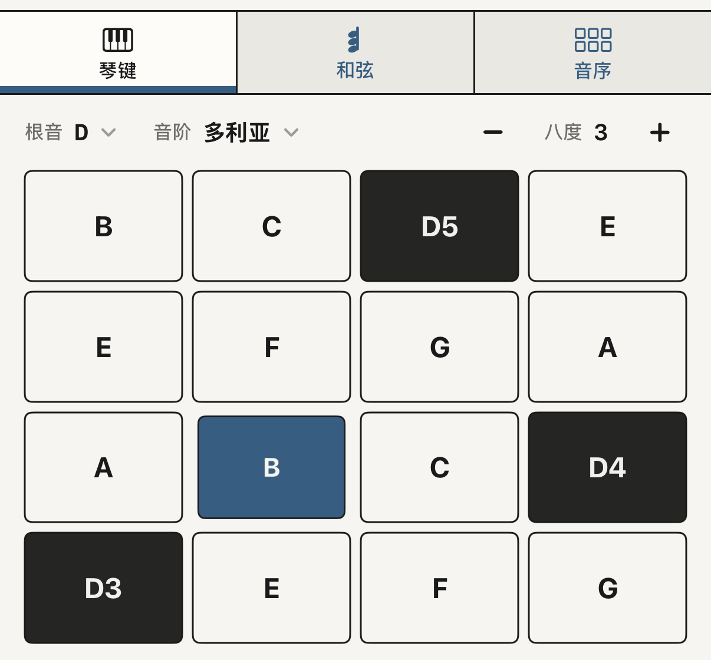
琴键，有根音、音阶和键盘。和弦
和弦 在每个打击垫上放一个和弦，有两种模式。
在 音阶 模式下有八个打击垫，对应音阶的八个级数。按住一个修饰键，比如 7、9 或 sus，你点的打击垫就会换和弦。只点一下修饰键就松开、不碰打击垫，它会一直生效，直到你再点它一次。
和弦以密集排列发声，音挤在键盘中间，不带低音。用 − 和 + 把它们移低或移高。
在 自定义 模式下，你在两组各八个打击垫上做自己的和弦。点 编辑 或一个空的打击垫。在键盘上弹的每个音都会加进和弦，最多八个。然后按 保存。
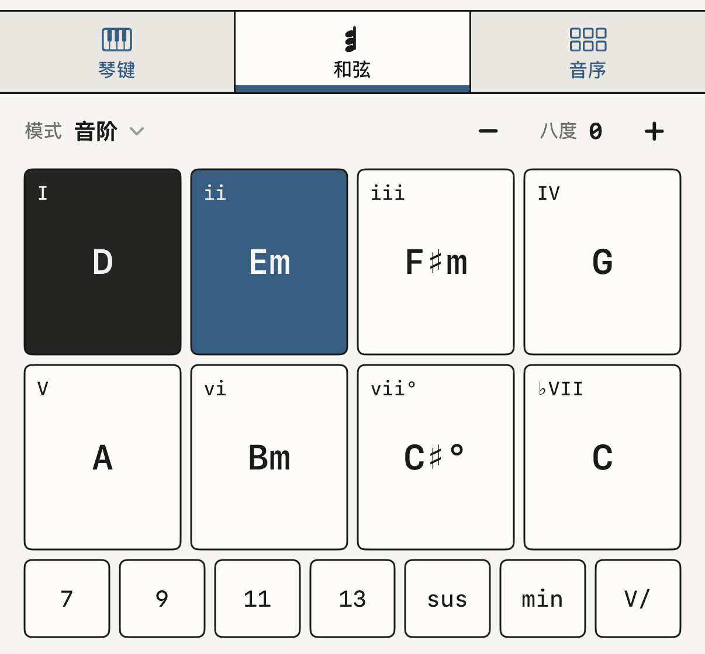
音阶 模式下的 和弦，带修饰键那一行。音序
音序 有五个档位，在左上角的名字那里选：关 · 琶音 · 步进 · 弹跳 · 桉树。
琶音把你在琴键或和弦里按住的音做成琶音，走在一个 16 步的圆环上。步进是最多 64 步的音序器，每页 16 步。点一步就跳到那里写入。双击清除。弹跳是一张摆着铃铛的台球桌。点一下放一个铃铛，拖一下把球打出去。球滚过哪个铃铛，哪个铃铛就响。小心，很容易玩上瘾。桉树有单独的一节，就在下面。
选 关 时，之前的内容会保留下来，等你回来。
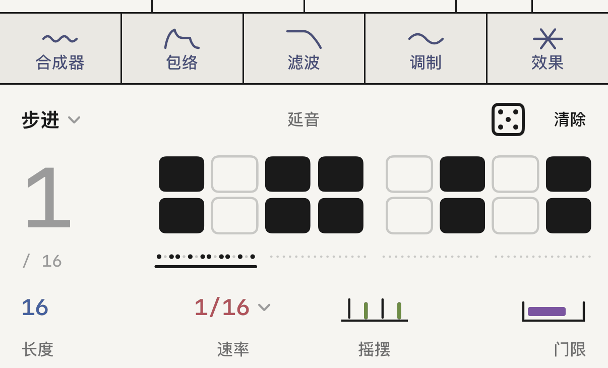
步进。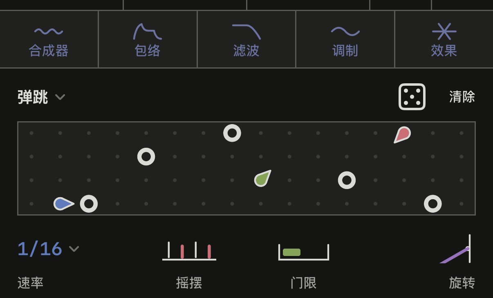
弹跳，几个球在铃铛之间弹来弹去。桉树
桉树 是一个循环播放的钢琴卷帘，灵感来自 Koala Sampler 的音序器。你可以弹进去或者画进去，喜欢了就把它印录到磁带上。
卷帘下面有四个键。
播放让它开始转。录音把你在琴键、和弦或kit里弹的音写进卷帘，每一圈都会再加上去。长度按磁带的拍号设定它有几个小节。印录把它录到磁带上。
点卷帘可以放大打开。上面是 循环、吸附 和 量化，下面是 画笔、力度、概率 和 撤销。画笔 画音符，力度 和 概率 设定每个音的力度和概率。双指捏合可以缩放，[] 让整个卷帘重新显示出来。
印录 从离磁头最近的小节线开始，把正好一圈录到待录音轨上。磁带必须是停着的。连续印录两次，第二次会紧接在第一次后面。
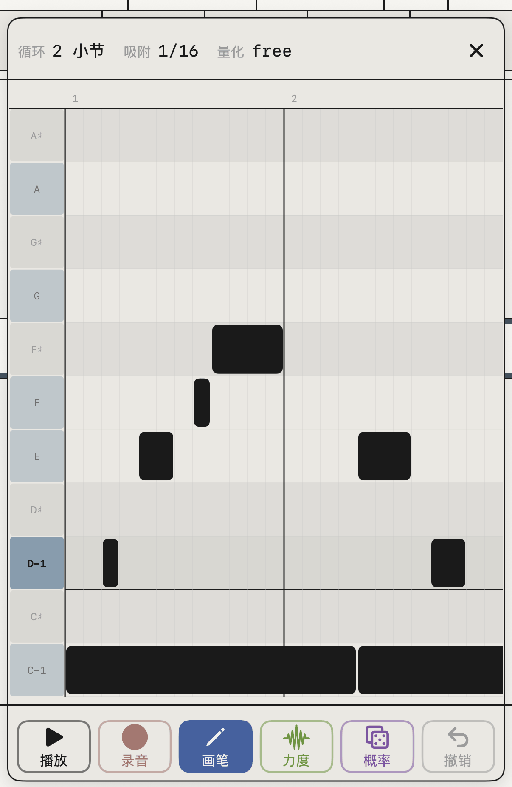
桉树，上面是 循环、吸附 和 量化。Kit
kit 是一套有 24 个打击垫的鼓组，分 A 和 B 两组。点一个打击垫选中它，它的声音就在上面打开，带着 输入 · 门限 · 标准化 · 反转 · 裁切。
点一个空的打击垫，可以从你的声音 文件夹、文件（音频或视频）、麦克风 或 磁带 上的一条音轨载入声音。
切片 按你标的点把一个声音切开，把切出来的片段分到空着的打击垫上。也可以在声音播放时点打击垫来标切点。标准化 把声音的音量提到峰值。
要清空一个打击垫，打开 输入，点 清除，撤销 可以把它放回去。从声音库里删除一个声音，它会从所有地方消失，包括用到它的打击垫和预设。
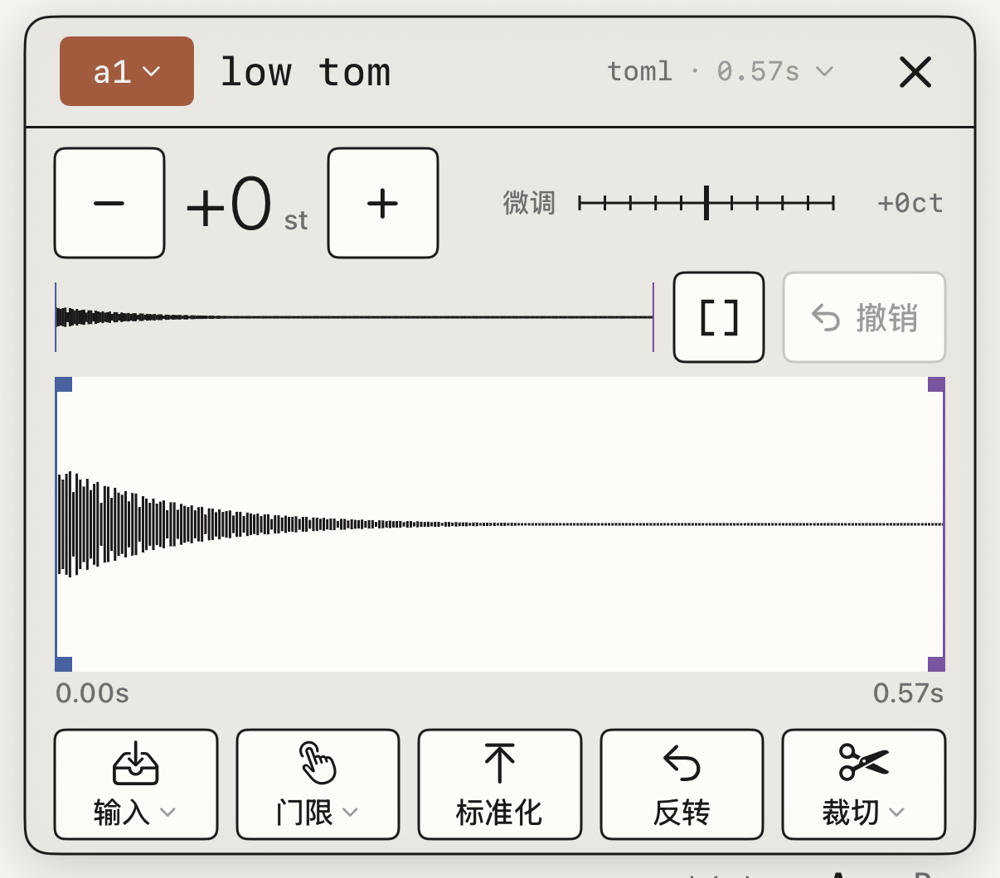
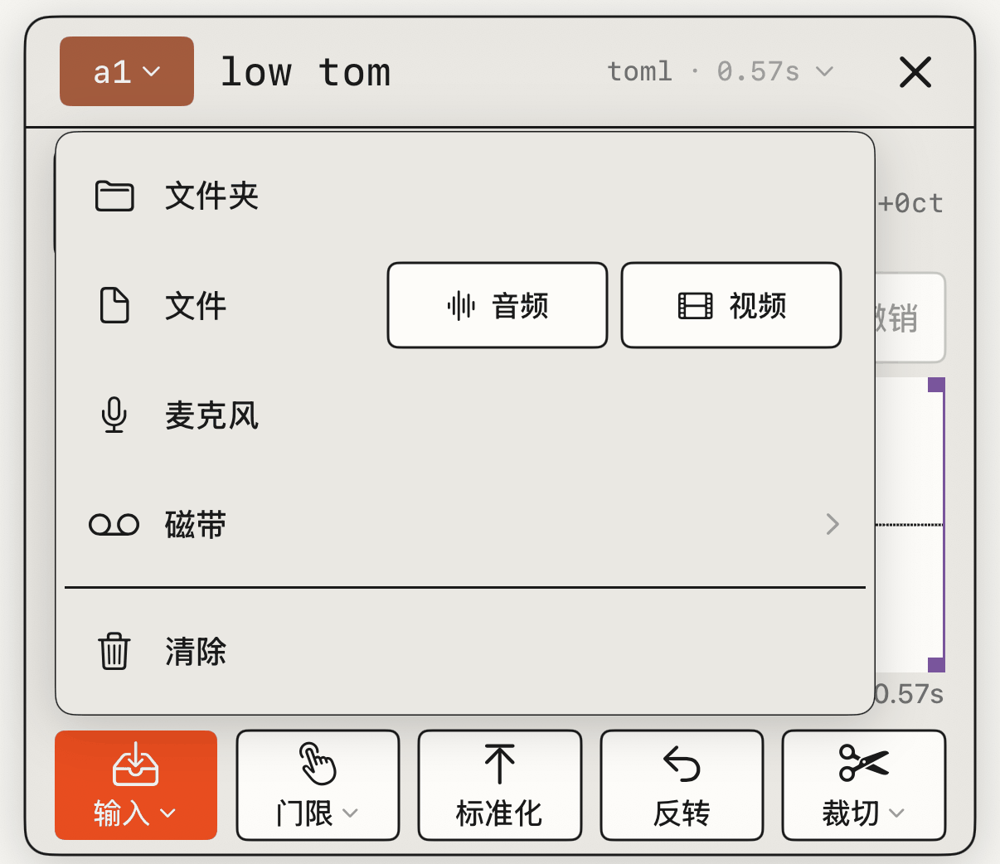
混音
混音有四个标签页：fx 1 · fx 2 · 混音 · eq。
通道条
在 混音 里每条音轨一条通道条，全部都能放进一屏。
输入是只录一个音源时的输入增益。声像把音轨放在左边或右边。sd1和sd2把音轨送到fx 1和fx 2。- 推子带着电平表，
m把音轨静音。
通道条上方的 过载 把整个混音往限幅器上推，范围是 −12 到 +12 dB。推得越高，声音越紧。
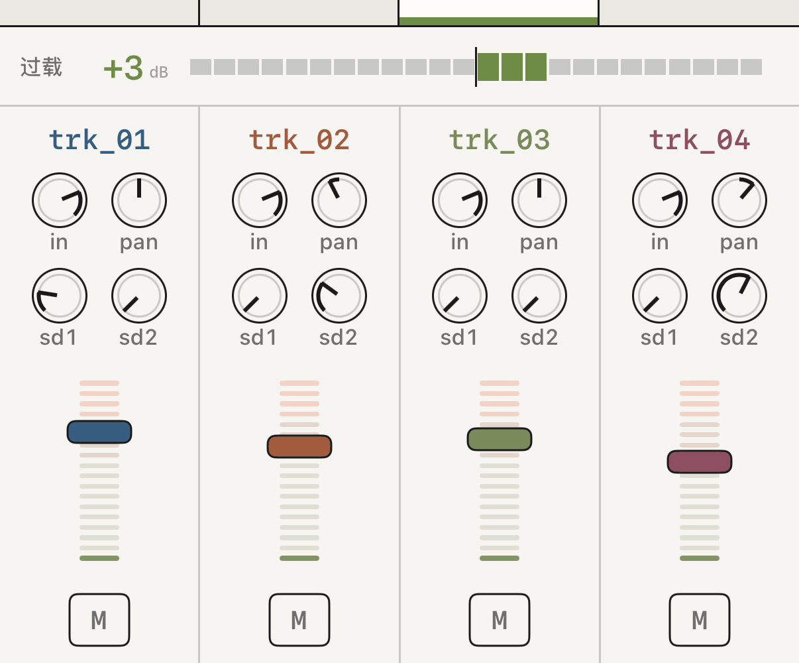
混音 的通道条，上面是 过载。效果
fx 1 和 fx 2 是两个共用的效果，每条音轨用 sd1 和 sd2 送过去。点一条空的总线，可以在 磁带饱和 · 延迟 · 混响 · 破碎 · 雾化 · 摇晃 · 闪烁 里选，或者选 插件 来用别的 App 的 AUv3。
每个效果有四个旋钮，从 00 到 99。竖向拖动来调节，双击复位。上面的 使用中 关掉效果但什么都不丢，回送 设定它的电平，更改 换成另一个效果。
大多数效果是叠加到音轨上的，音轨照常发声。破碎、雾化 和 摇晃 会替代原声：发送量越大，原声越少，发送开到最大时只能听到效果。
弹的时候，你听到的待录音轨是带效果的。录下来的内容不带效果。
所有旋钮都列在 效果卡片 里。
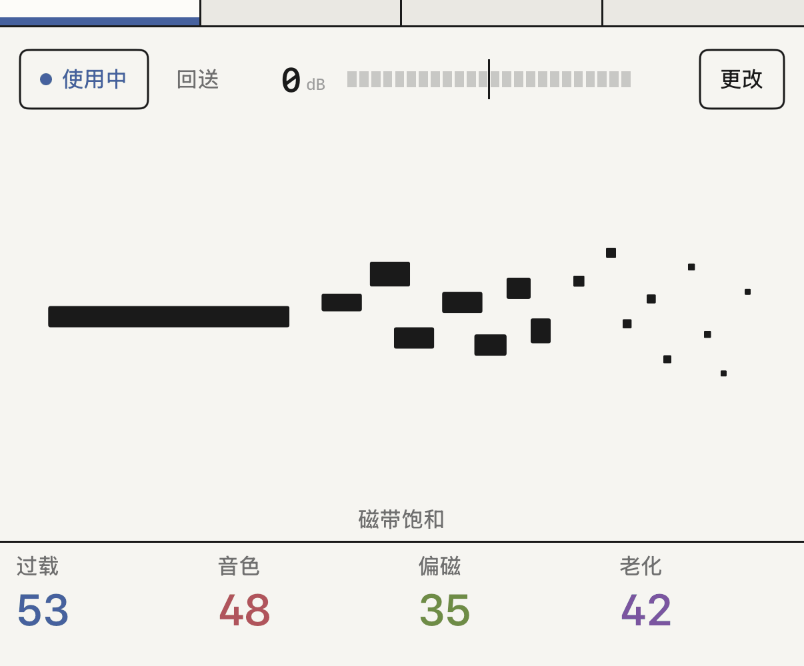
fx 1 上的 磁带饱和 和它的四个旋钮。其他 App 的插件
在一条总线上选 插件，会列出你装过的 AUv3 效果，按厂商分组。打开界面 打开插件的界面，在 iPad 上它出现在一个可以调整大小的浮动窗口里。速度会自动同步，插件的状态随磁带保存。
总混 EQ
eq 是一条全屏的曲线，有四个固定频段：低频 150 Hz · 厚度 400 Hz · 临场 2.5 kHz · 空气 8 kHz。上下拖动一个频段，最多提升或衰减 8 dB，双击恢复平直。
用两根手指捏合，可以同时缩放四个频段。一个开关可以关掉整个 eq，曲线保留。
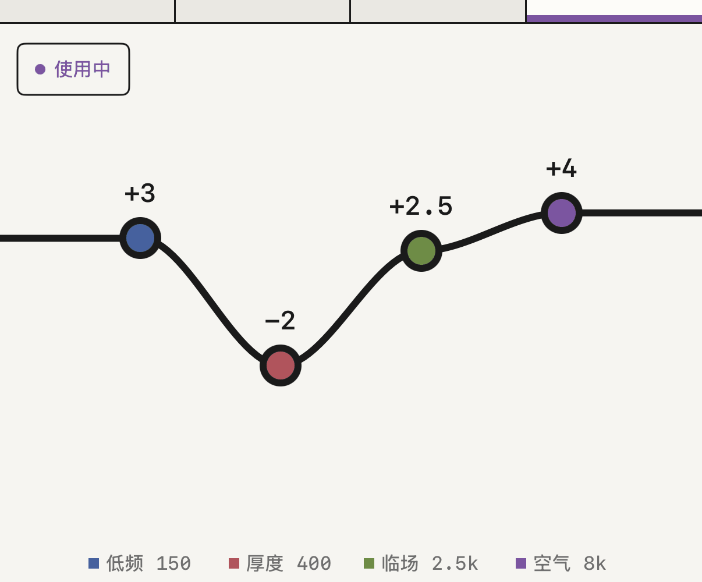
声音经过哪里
每条音轨先经过自己的通道条和发送。然后全部汇在一起，经过 过载、eq 和限幅器再输出，所以 eq 里提升的部分也会往限幅器上推。
磁带和导出
每个项目是一盘磁带。
你的磁带
点顶栏的 项目 打开 磁带。在那里可以建一盘 新磁带，在每盘磁带那一行可以复制、重命名或删除它。删除需要确认，而且无法恢复。
每盘磁带保存它的音轨和混音、速度、拍号、循环点和效果。新磁带从 120 BPM 开始，音轨数按 音轨 里的设置。
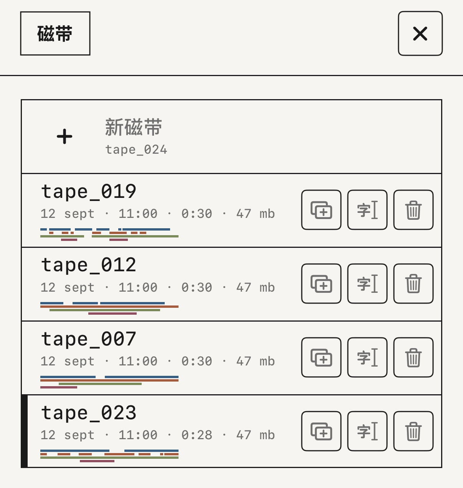
导出
点顶栏的弹出图标。面板里有三项选择。
输出是总混（完整的混音）或分轨（每条音轨一个文件）。格式是wav（24 bit，无损）或m4a（压缩）。范围是整盘磁带或循环的一圈。
按 退带，文件会通过 iOS 的共享面板发出去，存到文件 App、用 AirDrop 发送，或者交给别的 App。
导出的声音和播放时一样。在 总混 里，静音的音轨不出声，并且会经过限幅器。在 分轨 里，即使音轨静音了，每个文件也带着完整的音频，有过载和 eq，但不经过限幅器。
如果磁带结尾有混响或延迟的尾音，最多会多导出 12 秒。在 循环 里，这段尾音最多有 2 秒会折回到开头，让循环首尾接上，没有跳变。
合成器要先录到音轨上，才会出现在导出里。详见 录合成器。
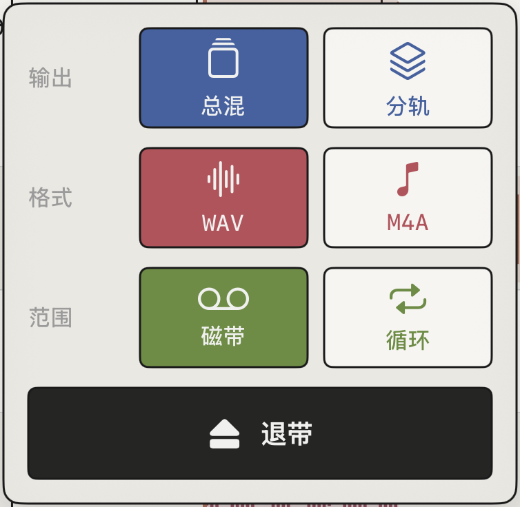
退带 按钮。和其他 App 一起用
同步速度
在 设置 ▸ 同步 里有两种共享速度的方式。
MIDI 时钟 用 输出 把你的速度发出去，或者用 输入 跟随另一台设备的速度，启动和停止也包括在内，可以通过 USB、Bluetooth 或网络。
link 打开 Ableton Link 面板，让你和同一网络里的其他 App 合拍演奏。link 打开期间，MIDI 时钟 会关闭并锁定。
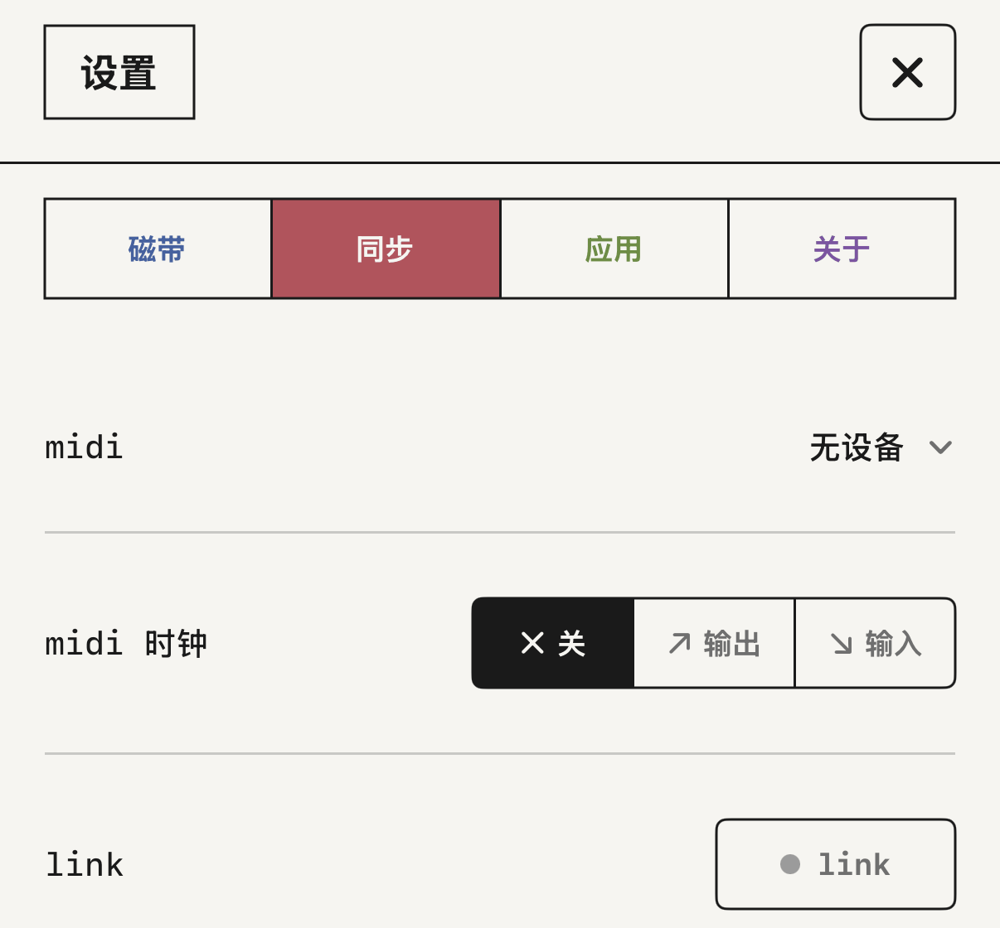
MIDI 时钟 和 link。用 MIDI 键盘弹 groovebox
通过 USB、Bluetooth 或网络接上的 MIDI 键盘可以弹合成器，默认接收所有通道。在 设置 ▸ 同步 ▸ midi 里选择设备和通道。支持延音踏板和弯音。
TapeDesk 也会作为 MIDI 端口出现在同一台设备的其他 App 里，比如 AUM 或 Drambo。
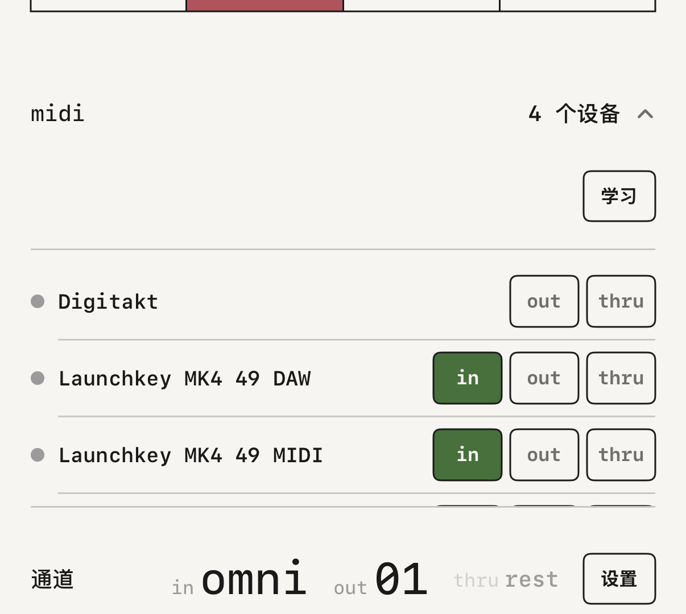
MIDI 学习
学习 可以把控制器上的一个旋钮分配给 App 里几乎任何控件：走带、推子、声像、发送、静音、效果的旋钮和 eq 的频段。
在 设置 ▸ 同步 ▸ midi 里打开它，每个可以分配的控件上都会出现一块 set 标牌。点标牌，再转动实体旋钮，就分配好了。按 完成 退出。
合成器的宏旋钮和切换预设也可以分配。
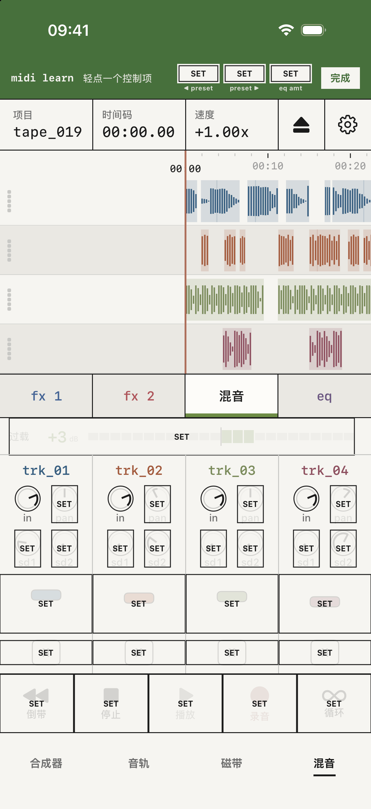
学习，混音页上盖着标牌。TapeDesk 作为插件
TapeDesk 也可以作为 AUv3 插件在别的 App 里打开。TapeDesk: Tape 是带混音的磁带，它的磁带和你在 App 里看到的是同一批。
上面的 时钟 有两个选项。
host是出厂设置。按待录，宿主一开始播放，就按宿主的速度开始录音。磁带给你完整的走带控制和你自己的速度。
用 host 时也可以移动磁带。把它拖到你想要的位置再松手，之后它从那里跟着宿主启动和停止。这对没有时间线、从不回到零点的片段式宿主很方便。切到 磁带 再切回 host，磁带会重新跟上宿主。
用 音源 时，插件最多接收宿主的六路输入，每路进你选的音轨，并且同时录下，在循环里和用门限时也一样。直通 让宿主的输入能从输出听到。宿主可以自动化整个混音。
TapeDesk: Tape。TapeDesk: Play groovebox
TapeDesk: Play 是在别的 App 里作为乐器使用的合成器。它从宿主接收音符、延音踏板和弯音，提供 37 个可以自动化的参数。
声音随宿主的工程保存。预设、音阶和 DX 卡带都和 App 里的一样。
TapeDesk: Play，键盘打开着。卡片
这部分用来查阅：每个引擎和效果的旋钮、设置、术语索引和许可证。
引擎 groovebox
十一个合成引擎都基于 Émilie Gillet（Mutable Instruments）的 Plaits。sample 和 kit 播放采样。
drift
一群模拟振荡器，立体声
漂移- 从静止的一群到不断变化的一团云
群集- 有几个声部
绽放- 向中间的失谐
扩散- 向两侧的失谐，立体声更宽
poly
虚拟模拟
波形- 从温暖到硬同步那样的咬感
厚度- 锯齿波的厚度
音色- 亮度
声部- 每个声部的音程，同度、五度、八度或八度加五度
fold
波形折叠
折叠- 折叠量
波形- 起始波形
扭曲- 往下温暖，往上金属感
律动- 一个慢速 LFO，让折叠像在呼吸
fm
双算子 FM
调制量- 从正弦到钟声，再到铿锵声
比率- 算子之间的音程，按档跳
尖锐- 反馈，从干净到嗡嗡声
渐强- 起音之后让声音鼓起来
pluck
拨弦，会自己消失
拨弦- 拨动的亮度
阻尼- 持续多久
音色- 从温暖到金属感
箱体- 琴箱的共鸣
mallet
有音高的打击乐，会自己消失
敲击- 敲击的硬度
余韵- 持续多久
音色- 从暗到金属感
闪烁- 高次泛音的亮度
wave
波表
扫描- 在波表中的位置
波形- 波形家族
量化- 从干净到 lo-fi
演变- 自己在波表里走
cz
相位失真
峰值- 共振的深度
波形- 窗口的形状
泛音- 共振落在哪个泛音上，按档跳
扫频- 每个音的共振峰扫动
ensemble
弦乐机，立体声
合奏- 合唱的量
音区- 从锯齿波到方波
空气- 滤波器随音高打开的程度
颤音- 每个音的颤音
noise
噪声和质感
粗粝- 从噼啪的颗粒到嘶声
峰值- 滤波器的共振
色调- 低通、带通或高通
阵风- 每个音一阵阵的起伏，从不重复
dx
六算子 FM，会自己消失
预置- 音色库 32 个音色中的一个
调制- 音色自带 LFO 的深度
明亮- 亮度
拉伸- 拉长或缩短包络
.syx 卡带用 dx 卡带 里的 导入 .syx 载入。
sample
键盘采样器
音符- 采样本身的音高
点波形可以裁剪，也可以标出循环。

插入效果 groovebox
每个引擎在自己的 效果 标签页里带一个效果，作用在声音内部，一个音一个音地处理。
合唱
速率- 速度
深度- 深度
反馈- 反馈，负值发空，正值带共鸣
声部- 1 到 4 个声部
delay- 基础延迟，短了发亮，长了像颤音
宽度- 立体声宽度
mix- 干湿比
过载
和 磁带饱和 是同一个引擎
增益- 饱和量，音量自动补偿
音色- 饱和之后的滤波
偏磁- 不对称
边缘- 再多一点饱和
个性- 另一种不对称调节
mix- 干湿比
out- 输出电平，±12 dB
移相
速率- 扫动的速度
深度- 扫动的幅度
反馈- 共振，从空灵到像人声
级数- 2 到 12 级
中心- 扫动的中心
扩散- 左右之间的相位差
mix- 陷波有多明显
延迟
和混音里的 延迟 是同一个引擎
时间- 最长 1.2 s，或者用
sync按拍子分 反馈- 重复次数
音色- 让每次重复变暗
乒乓- 重复在左右之间交替
sync- 把
时间绑定到速度 调制- 磁带的晃动
mix- 干湿比
空间
和混音里的 混响 是同一个引擎
大小- 大小
衰减- 尾音长度
阻尼- 高频怎么衰减
音色- 亮度
调制- 弹簧的叮当声
mix- 干湿比
污浊
法兹
增益- 进入法兹的量
折叠- 波形折叠
偏磁- 一边更多法兹，另一边静音
破碎- 把采样率最低降到 300 Hz
音色- 破碎之后的滤波
mix- 干湿比
out- 输出电平，±12 dB
AU
别的 App 的 AUv3 效果
回送- 效果电平，±12 dB
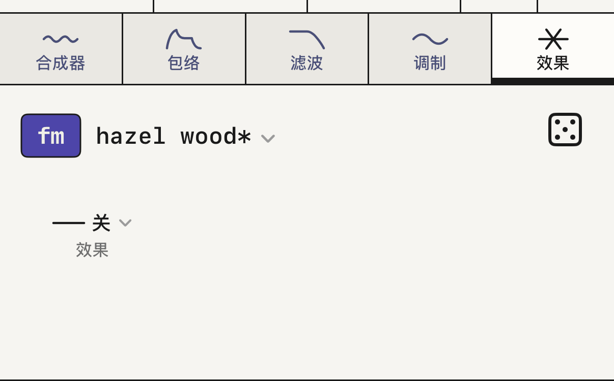
空间 的 效果 标签页。混音效果
这些是载入在 fx 1 和 fx 2 里的效果。
磁带饱和
磁带饱和，叠加
过载- 把信号往磁带上推多少，音量自动补偿
音色- 高频滚降，从 200 Hz 到 20 kHz
偏磁- 不对称，加入偶次谐波
老化- 从新磁带到旧卡带，先有嘶声，再有抖晃
延迟
磁带回声，叠加
时间- 30 到 750 ms。转动时回声会滑过去
反馈- 重复次数
音色- 让每次重复变暗
抖晃- 延迟时间的晃动
混响
八条反馈延迟线，叠加
衰减- 尾音长度
音色- 房间的亮度
滴落- 弹簧的叮当声
阻尼- 尾音里高频怎么衰减
破碎
降采样和降位深，替代
速率- 从 48 kHz 到 1.5 kHz
位深- 从 16 到 3
粗粝- 从阶梯感到噪声
音色- 高频滤波
雾化
会动的滤波器，替代
频率- 起始截止频率，从 80 Hz 到 8 kHz
移动- 往左由信号带动，往右由 LFO 带动
共振- 共振，接近最大时会自激
波形- 从低通到带通，再到移相
用 free 时 LFO 在 0.1 到 8 Hz 之间。用 sync 时跟随速度。
摇晃
磁带的晃动，替代
深度- 音高晃动多少
速率- 从 0.1 到 8 Hz
波形- 从正弦到随机游走
跌落- 电平和高频的掉落
闪烁
带八度的混响，叠加
闪烁- 有多少八度被送回去
大小- 尾音长度
音色- 从明亮到暗
绽放- 声音云升起来要多久
下面可以选音程，从 −12 到 +12。出厂是 +12。
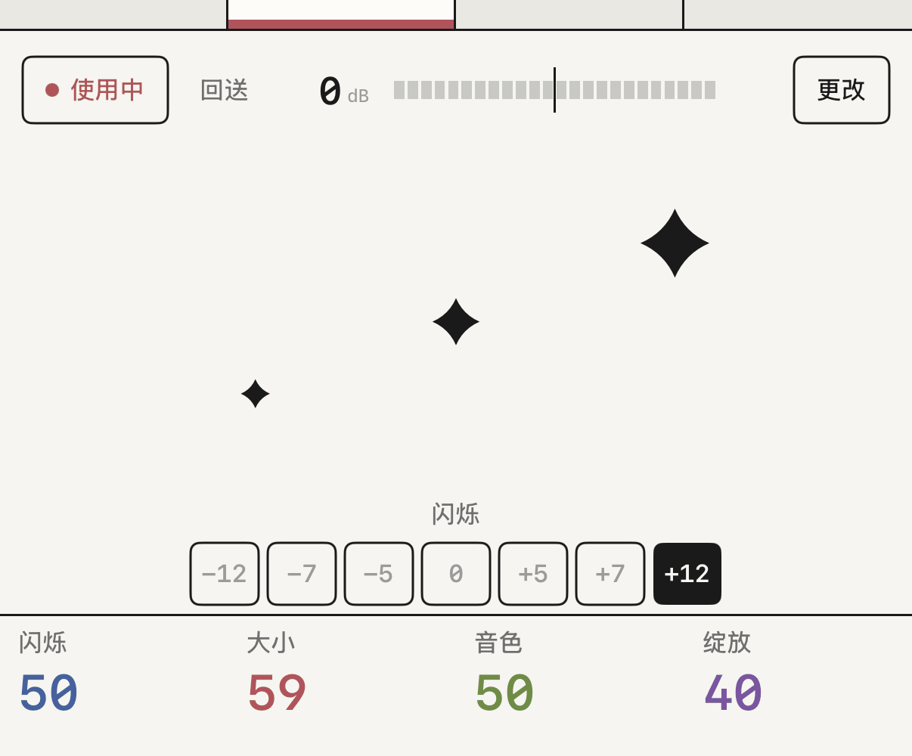
闪烁 和音程选项。设置
顶栏的齿轮打开设置，有四个标签页。
磁带
音轨- 磁带有几条音轨，4 到 6
tempo- 用滚轮设，或者跟着点击打拍子
拍号- 磁带的拍号
预备拍- 录音前的预备拍
节拍器- 打开节拍声
录音模式叠录或替换编辑栏- 用什么手势打开它
区域- 录音怎么画出来
同步
midi- 设备、
学习、通道、seq、输出偏移、无线和紧急停止 MIDI 时钟关·输出·输入link- 打开 Ableton Link
应用
模式录音机或groovebox主题浅色·深色·自动力度- 弹琴键和打击垫时敲击的影响有多大，0 到 5
语言- 十五种语言，立即切换
麦克风- 权限状态
音质录音室录 24 bit，演示录 16 bit，占空间更少存储- TapeDesk 占了多少空间
应用图标- cream · dark · olive · wine
关于
不收集数据- 链接到隐私政策
手册- 打开这份手册
速率- 给 App 评分
支持- 联系作者
最下面是版本号，以及声音和 Plaits 的致谢。
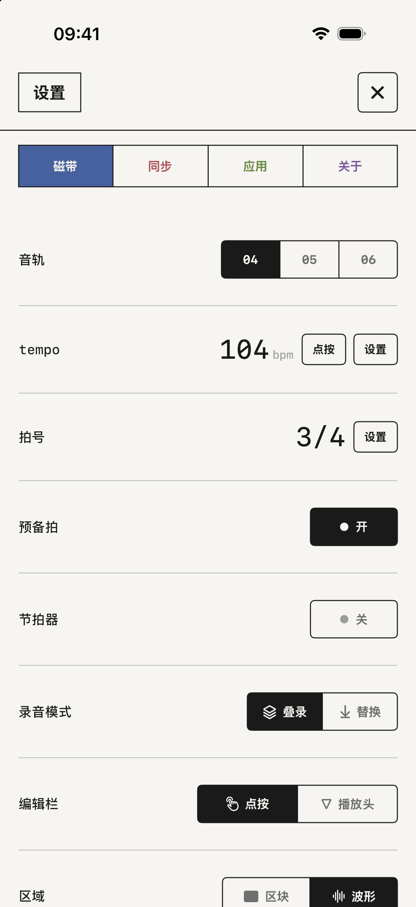
磁带同步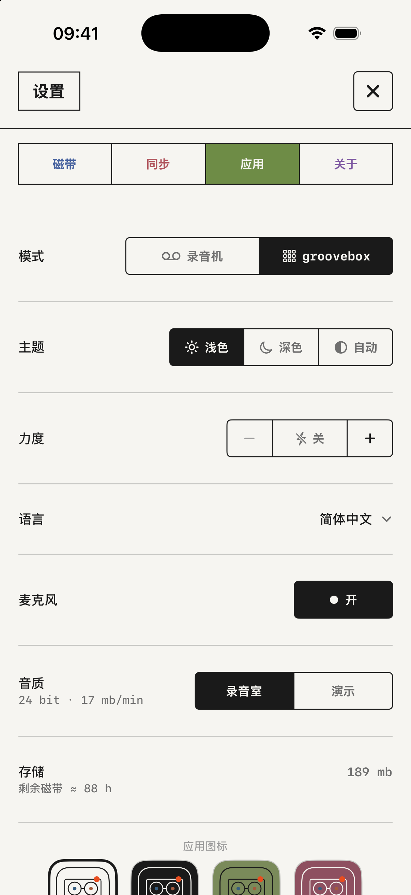
应用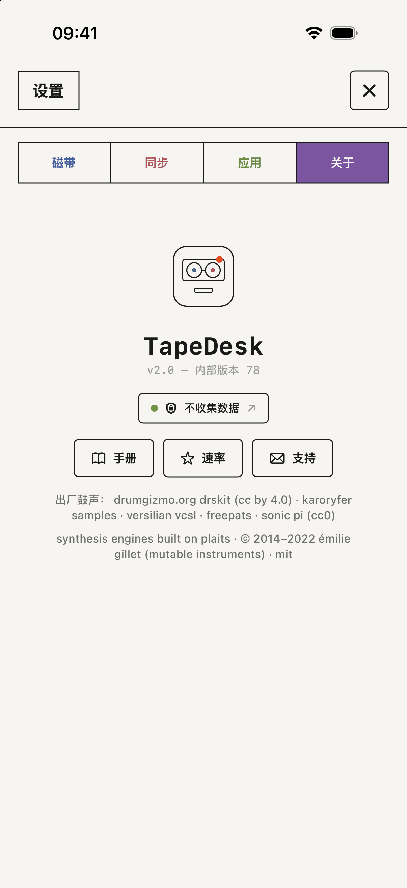
关于术语索引
桉树· 桉树AU· 其他 App 的插件标准化· kit并轨· 两条音轨并成一条播放· 第一段录音步进· 音序插件· 其他 App 的插件撤销· 音轨撤销和重做· 编辑栏磁带· 你的磁带打开界面· 其他 App 的插件待录· TapeDesk 作为插件倒带· 在磁带上移动叠录· 待录和录音eq· 总混 EQ反转· 编辑栏放下· 编辑栏分轨· 导出fx 1和fx 2· 效果更改· 效果groovebox· 两种模式过载· 通道条←合并和合并→· 编辑栏合成器· 选一个声音和弦· 和弦回送· 效果混音· 通道条kit· kitlink· 同步速度录音· 待录和录音录音机· 两种模式录音模式· 待录和录音- 每条音轨的声音 · 每条音轨的声音
- 门限 · 让录音自己开始
MIDI 时钟· 同步速度琶音· 音序切片· kit琴键· 琴键safe· 同时录多路输入使用中· 效果时钟· TapeDesk 作为插件输入· 通道条速度· 速度弹跳· 音序TapeDesk: Play· TapeDesk: PlayTapeDesk: Tape· TapeDesk 作为插件替换· 待录和录音提取· 编辑栏停止连按两下 · 待录和录音退带· 导出- USB 音频接口 · 同时录多路输入
项目· 你的磁带学习· MIDI 学习循环· 循环，现场循环音轨· 音轨印录· 桉树- 音频接口 · 同时录多路输入，声音从哪里进来
音序· 音序音源· 录合成器，同时录多路输入，TapeDesk 作为插件音源 → 音轨· 同时录多路输入预备拍· 待录和录音直通· TapeDesk 作为插件总混· 导出
许可证
kit 的出厂声音来自 DrumGizmo.org DRSKit（CC BY 4.0）、Karoryfer Samples、Versilian VCSL、FreePats 和 Sonic Pi（CC0）。
十一个合成引擎基于 Émilie Gillet（Mutable Instruments）的 Plaits，采用 MIT 许可证。Copyright 2014-2022 Émilie Gillet。许可证要求它的文本随程序一起分发，所以附在这里。
Permission is hereby granted, free of charge, to any person obtaining a copy of this software and associated documentation files (the "Software"), to deal in the Software without restriction, including without limitation the rights to use, copy, modify, merge, publish, distribute, sublicense, and/or sell copies of the Software, and to permit persons to whom the Software is furnished to do so, subject to the following conditions:
The above copyright notice and this permission notice shall be included in all copies or substantial portions of the Software.
THE SOFTWARE IS PROVIDED "AS IS", WITHOUT WARRANTY OF ANY KIND, EXPRESS OR IMPLIED, INCLUDING BUT NOT LIMITED TO THE WARRANTIES OF MERCHANTABILITY, FITNESS FOR A PARTICULAR PURPOSE AND NONINFRINGEMENT. IN NO EVENT SHALL THE AUTHORS OR COPYRIGHT HOLDERS BE LIABLE FOR ANY CLAIM, DAMAGES OR OTHER LIABILITY, WHETHER IN AN ACTION OF CONTRACT, TORT OR OTHERWISE, ARISING FROM, OUT OF OR IN CONNECTION WITH THE SOFTWARE OR THE USE OR OTHER DEALINGS IN THE SOFTWARE.